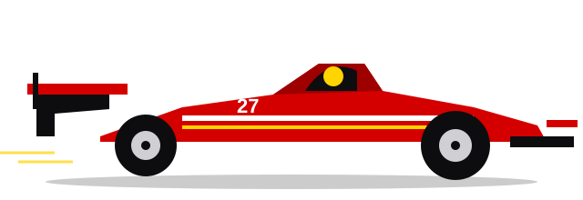

Race Car Driving

Race car driving is the art of getting a car around a track as fast as possible while staying in control. It combines precise car handling, split-second decisions and a lot of practice.
What is race car driving?
Drivers compete on closed circuits or set courses, either against the clock or directly against each other. Unlike driving on the road, everything is about using the full grip of the tyres: braking as late as is safe, turning in at the right moment and accelerating as early as the car allows.
Success depends on the driver, the car, the team and the strategy. Small gains of a fraction of a second per lap add up to a win over a whole race.
Main types of racing
Formula 1
The top level of single-seater racing. Open-wheel cars with powerful hybrid engines and advanced aerodynamics race at circuits around the world in a season known as the World Championship.
Endurance racing
Races that last many hours, such as the 24 Hours of Le Mans in France. Teams share driving between several drivers, and reliability, pit stops and consistency matter as much as outright speed.
Rally
Drivers race against the clock on closed public roads or tracks made of gravel, tarmac, snow or mud. A co-driver reads pace notes describing the road ahead.
Karting
Small, light, open go-karts on compact circuits. Karting is the usual starting point for young drivers and teaches racecraft, car control and fitness at a lower cost.
Why it is exciting
- Speed and skill: drivers work at the limit of grip, where tiny mistakes are visible.
- Strategy: tyre choice, pit stops and fuel or energy use can decide a race.
- Close competition: wheel-to-wheel battles reward bravery and judgement.
- Teamwork: engineers, mechanics and drivers work together as one unit.
Want to know how drivers do it? See the driving techniques.
Quick check
Which type of racing is the usual starting point for young drivers?